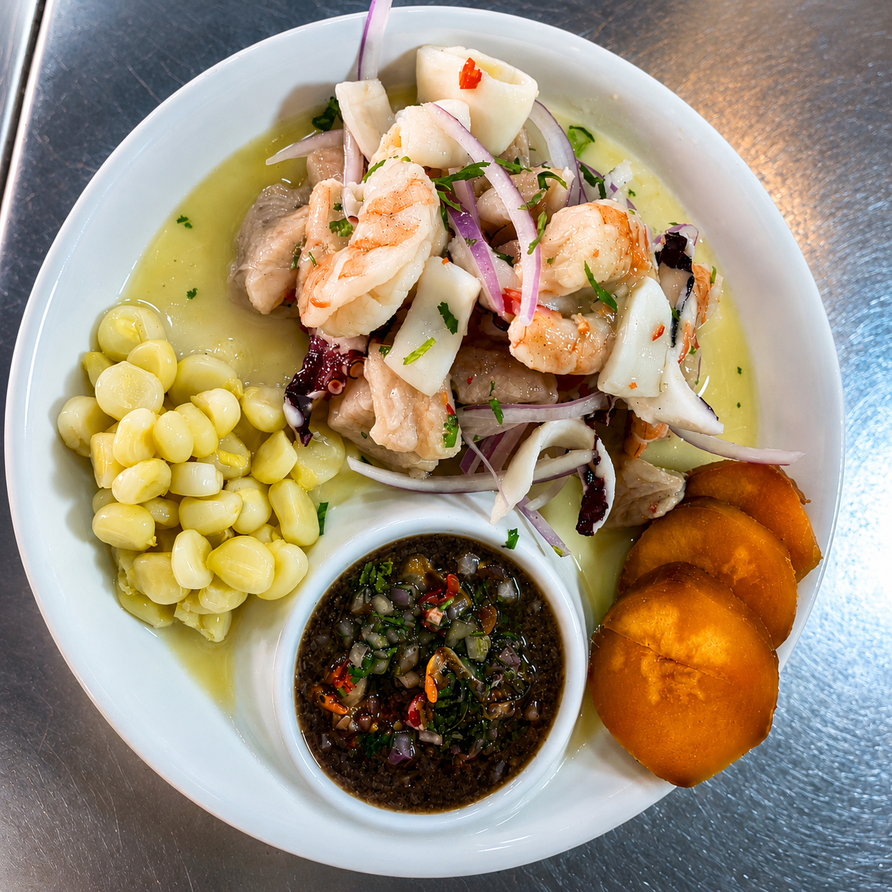
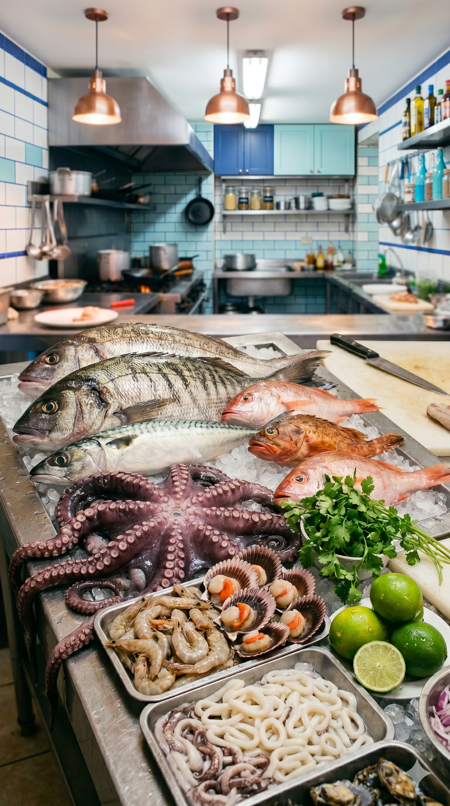
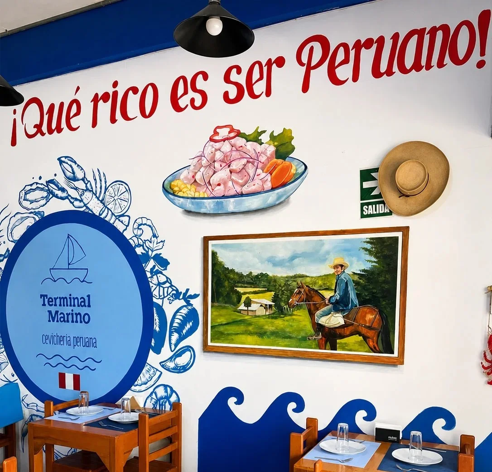
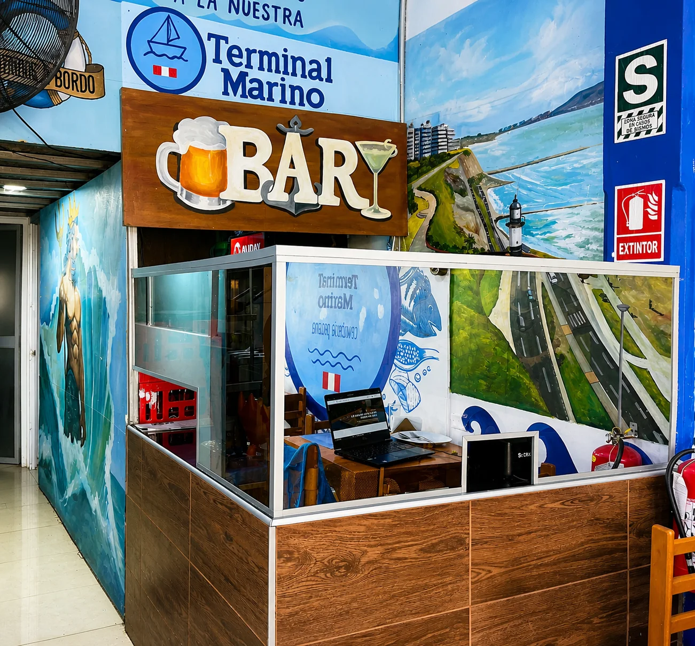
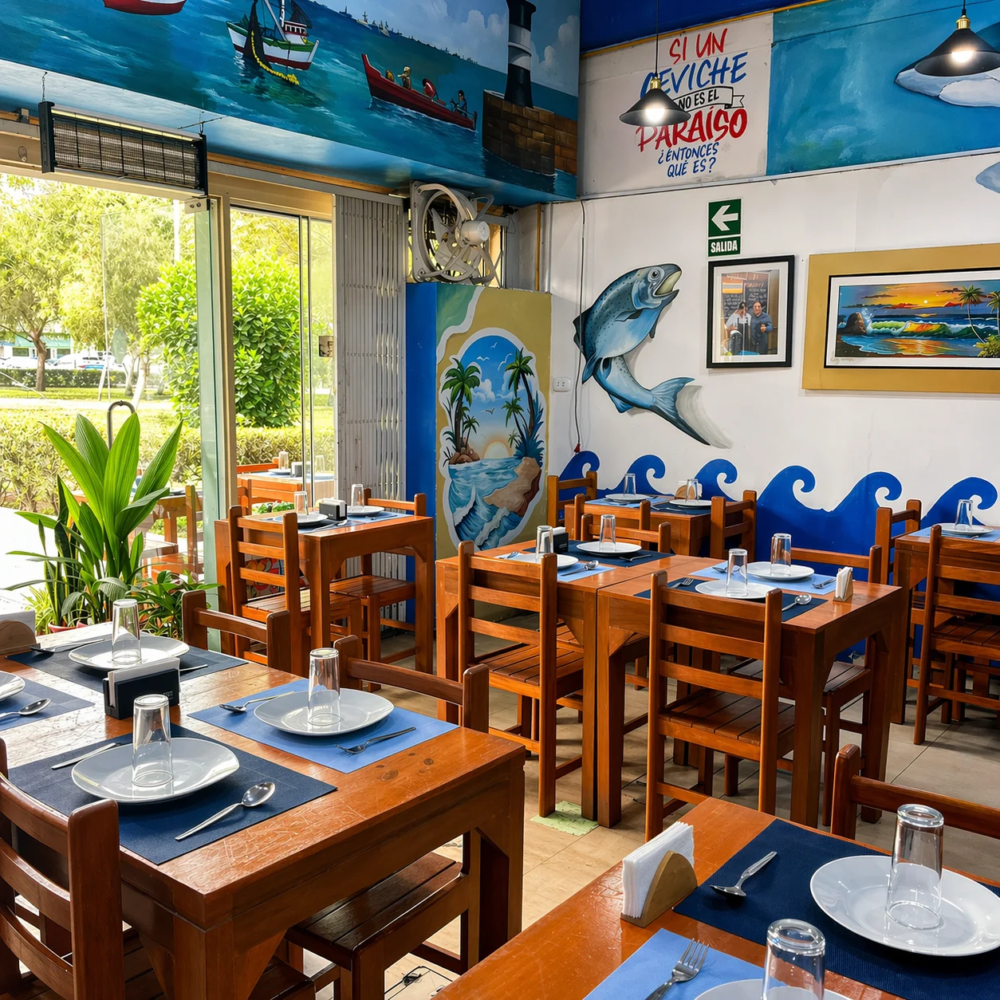

Ceviche Mixto con Conchas Negras
Mariscos seleccionados, conchas negras frescas y pesca del día marinados en zumo de limón sutil. Servido con choclo desgranado y camote o yuca.
Cevichería · Jesús María · Lima
Pesca del día, limón del valle de Chulucanas
y ajíes seleccionados al
amanecer.
Nuestra esencia
Terminal Marino es el resultado de una vida dedicada a entender los sabores que nos definen. No es solo un restaurante, es una visión donde el respeto por el producto y la calidez en el trato se encuentran en cada plato.
Nos inspira la frescura de una captura responsable y la alegría de crear algo nuevo cada día. Con cortes impecables y un balance perfecto de sabores, cada visita es un homenaje a la sencillez y belleza de nuestro mar.

"Honramos el sabor de nuestra región a través de ingredientes frescos y una búsqueda constante de la excelencia."
El ambiente


